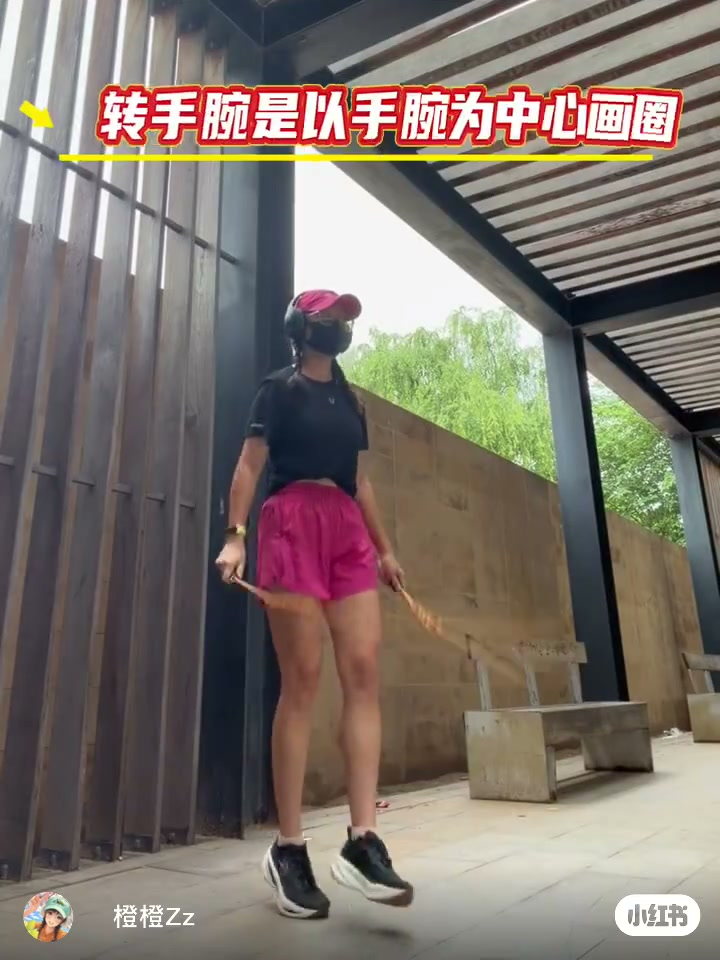
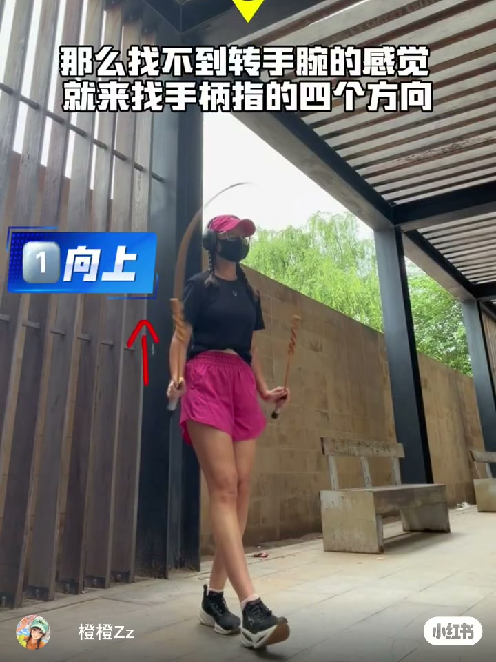
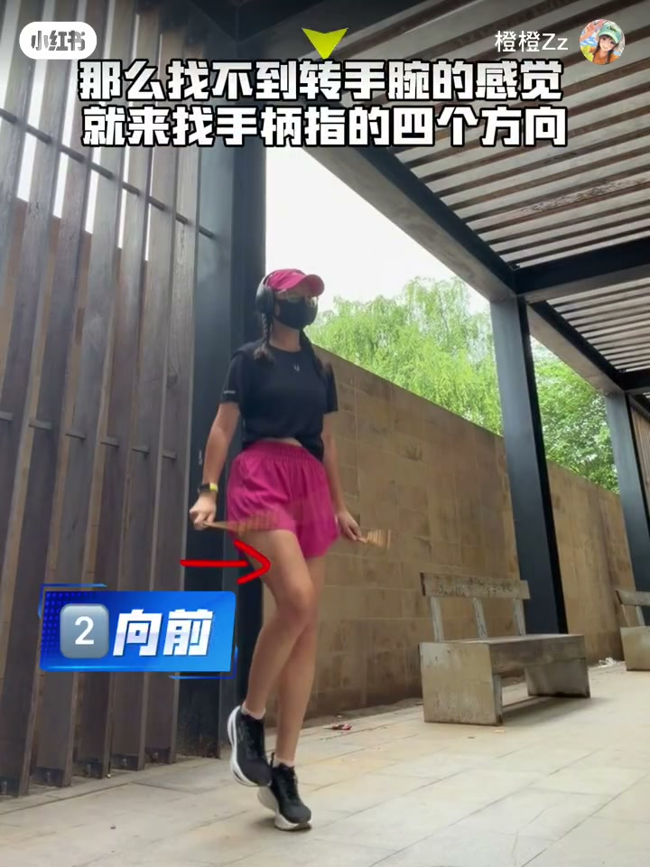
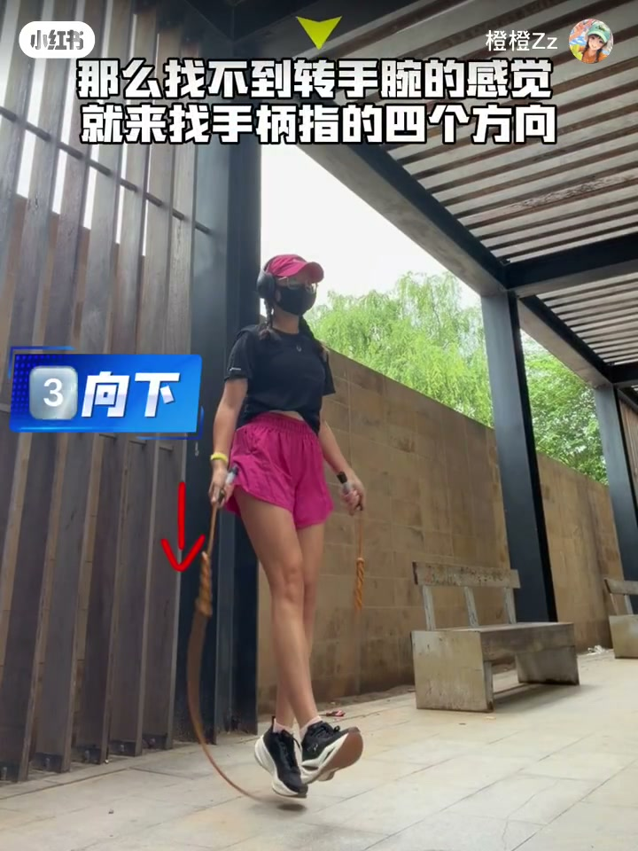
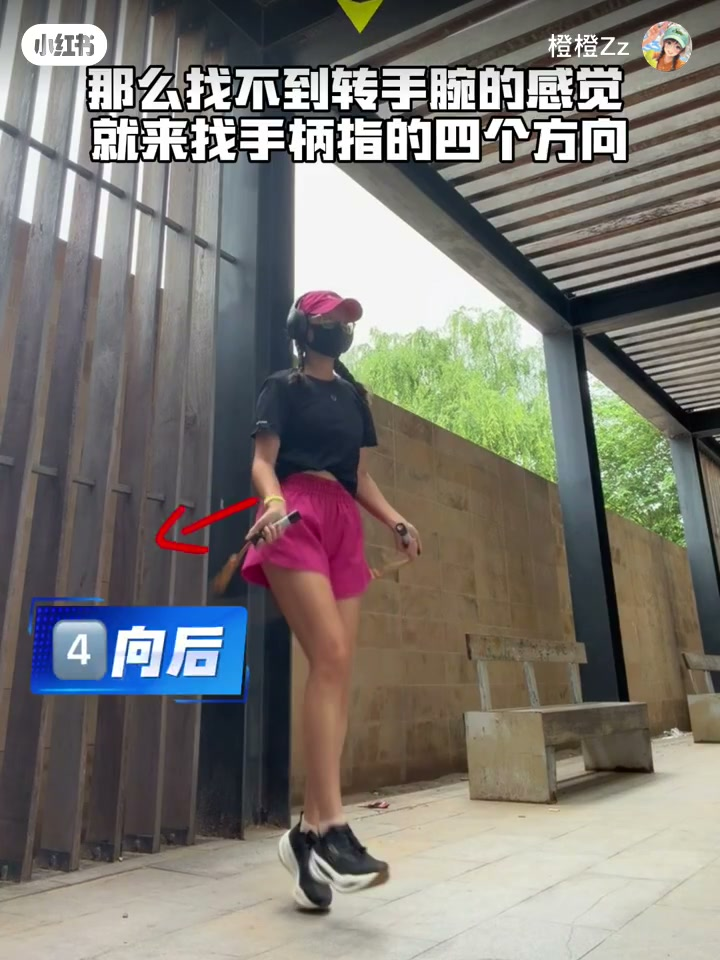
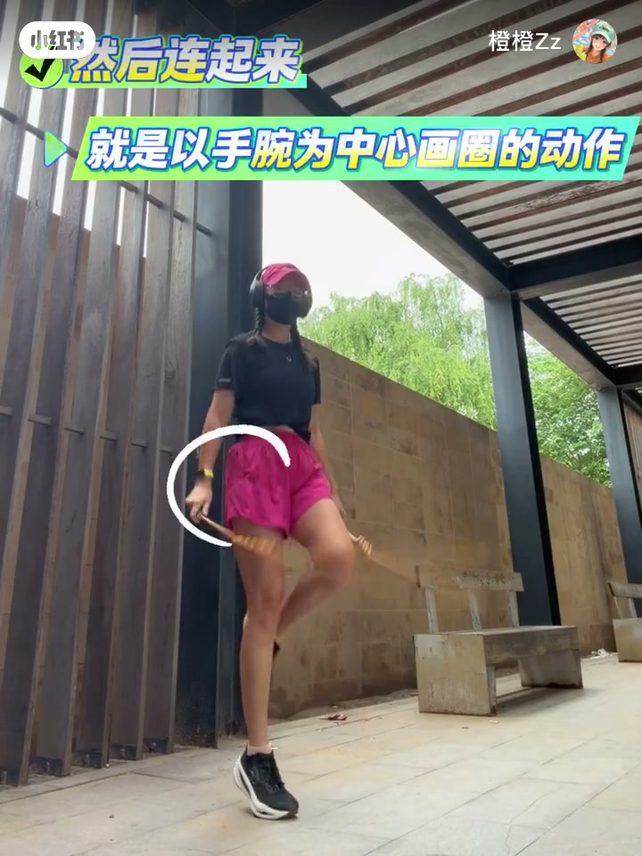
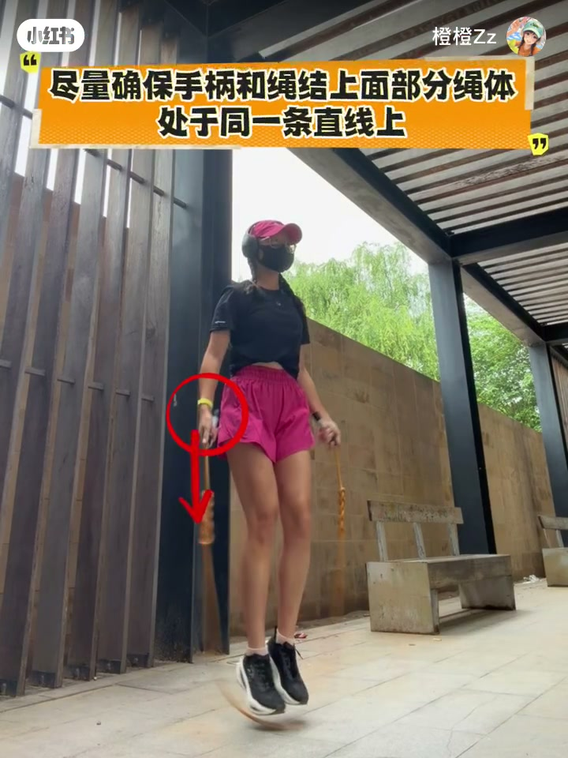
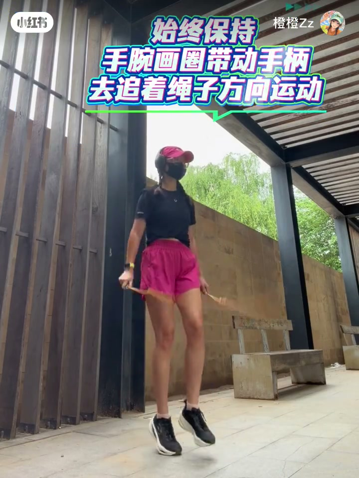
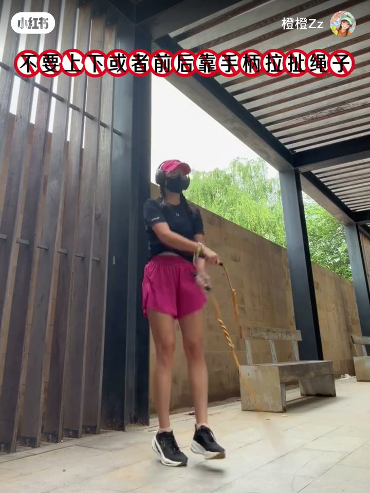

内容要点
「橙橙Zz」用约 41 秒讲清跳绳转腕的「感觉」：转手腕不是抡胳膊，而是以手腕为中心画圈。Whisper 把整段口播误听成乐器名「Zither Harp」，可当废稿；正文依据屏幕字幕、箭头标注与笔记文案重建。
知识结构
先钉死「以手腕为中心画圈」，再用手柄指向的上、前、下、后四个点给圈圈做定位。
四点连起来就是画圈；哪个方向角度不明显，就着重纠正那个方向。
手柄与绳结上方绳体尽量共线；手腕画圈带动手柄追绳；禁止上下/前后靠手柄拉扯绳子。
先用四个方向把手柄「指」清楚，再连成腕圈；保持手柄—绳体直线，动力留给转腕，别用手臂扯绳。
00:00-00:13定义：手腕画圈，手柄指四个方向
开场红字直接给定义：「转手腕是以手腕为中心画圈」。作者持珠节绳轻跳，双手低位贴近髋侧，画面在强调腕动而不是臂抡。接着字幕改成「找不到转手腕的感觉，就来找手柄指的四个方向」，用蓝标逐步弹出 1 向上、2 向前、3 向下、4 向后，每一步配红色箭头标出手柄应指的方向。
笔记文案补充了一个口播没写清、但练习很关键的细节：往下、往后转时，手心会翻转向前。也就是说四个点不是僵硬的「握柄姿势」，而是手柄头在空间里扫过的方位序列；胳膊尽量少乱晃，只让腕心带着柄头连点成圆。





00:13-00:24连起来：四点成圈，角度不够就纠
四点讲完，字幕换成「然后连起来，就是以手腕为中心画圈的动作」，右腕旁叠一层白色圆周示意——定位只是脚手架，真正要练的是连续扫过四点而不把肘、肩带起来。紧接着一句纠偏原则：「哪个方向的角度不明显，就着重纠正即可。」视频没有给出角度度数或节拍器式计数，证据层级是作者经验口诀，适合当作自检清单，而不是生物力学公式。

00:24-00:41手柄共线、追绳方向、禁止扯绳
后半段把「感觉」落到手柄与绳的几何关系：橙条写「尽量确保手柄和绳结上面部分绳体处于同一条直线上」，红圈圈住右手柄并向下箭头强调对齐。随后屏幕解释：手柄和绳体夹角越小，绳子拉扯手的力量越小，甩起来更好控（少握不住、磨手、腕疼），也不会觉得那么重——这是作者从手感出发的因果叙述，片中未给测力数据。
收束两条动作规则：始终保持手腕画圈，带动手柄去追着绳子方向运动；同时红框禁令「不要上下或者前后靠手柄拉扯绳子」。合在一起就是：腕圈提供旋转，手柄跟着绳走，别用手臂当绞盘硬拽。



详细文字转录
Whisper medium 将整段误听为乐器名「Zither Harp」（两段，约 0–30s / 30–59s），无可用口播。以下按原始分段保留；正文知识点来自屏幕字幕与笔记文案。
Zither Harp
Zither Harp